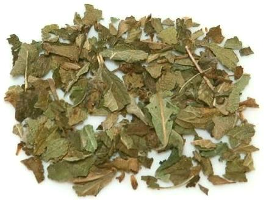

Koseret

[Kosearet (Amharic); A-kimbo (Sierra Leone); Ngadi, Dutmutzuri (Congo);
Lemon Herb, Butter Clarifying Herb, Gambey Tea Bush, Gambian Tea Bush
(English); Verveine d'Afrique (French) Lippia abyssinica
(Verbina family)]
This shruby herb, growing to about 7 feet, is native to Ethiopia, but is
now cultivated all over tropical Africa. It is most typically used as a
dried herb in Ethiopian cuisines, particularly in Niter kibbeh, a
spiced clarified butter, and in oils, said to be an effective preservative.
It is also used in various spice mixes, particularly the hot chili mix
Mitmita.
In the Congo (D.R. Congo and R.Congo) it is used fresh as a potherb.
In Gambia (West Africa) it is used dried as a substitute for tea.
Buying
This herb is available on-line from several sources,
but at a high price, 2021 US $13.50 per ounce to $20.00 per ounce.
Substitute
A commonly recommended substitute is 50% dried
Oregano and 50% dried Thyme, but it is inexact.
More on Verbinas.
More on Herbs.
vb_koseretz 210324 - www.clovegarden.com
©Andrew Grygus - agryg@clovegaden.com - Photos on this
page not otherwise credited are © cg1 -
Linking to and non-commercial use of this page permitted